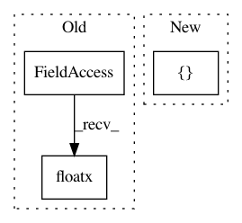

7c54ef6464c5d2885faf3e8b3ad60451d1894d7a,anago/layers.py,ChainCRF,build,#ChainCRF#Any#,280
Before Change
n_classes = input_shape[2]
n_steps = input_shape[1]
assert n_steps is None or n_steps >= 2
self.input_spec = [InputSpec(dtype=K.floatx(),
shape=(None, n_steps, n_classes))]
self.U = self.add_weight((n_classes, n_classes),
After Change
self.unroll = unroll
def build(self, input_shape):
self.input_spec = [InputSpec(shape=input_shape)]
self.input_dim = input_shape[-1]
self.kernel = self.add_weight((self.input_dim, self.units),
name="kernel",
In pattern: SUPERPATTERN
Frequency: 3
Non-data size: 3
Instances
Project Name: Hironsan/anago
Commit Name: 7c54ef6464c5d2885faf3e8b3ad60451d1894d7a
Time: 2018-05-28
Author: hiroki.nakayama.py@gmail.com
File Name: anago/layers.py
Class Name: ChainCRF
Method Name: build
Project Name: fizyr/keras-retinanet
Commit Name: a99f2d64b7fc02ac3ea94f2c0c99463621fff73e
Time: 2018-03-26
Author: j.c.gaiser@delftrobotics.com
File Name: tests/layers/test_misc.py
Class Name: TestNonMaximumSuppression
Method Name: test_simple
Project Name: fizyr/keras-retinanet
Commit Name: a99f2d64b7fc02ac3ea94f2c0c99463621fff73e
Time: 2018-03-26
Author: j.c.gaiser@delftrobotics.com
File Name: tests/layers/test_misc.py
Class Name: TestNonMaximumSuppression
Method Name: test_mini_batch